📋 Общая информация
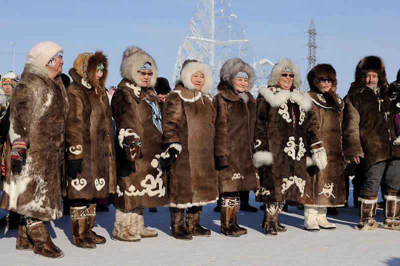
Численность
В России проживает около 16 тысяч чукчей. Основное население Чукотского автономного округа. Название «луораветлан» означает «настоящие люди».
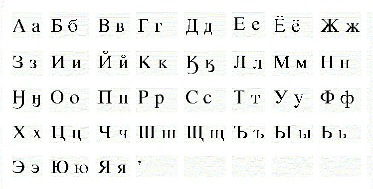
Язык
Чукотский язык относится к чукотско-камчатской семье. Имеет два диалекта: чавыванский (оленных) и маринский (прибрежных). Использует кириллицу с 1931 года.
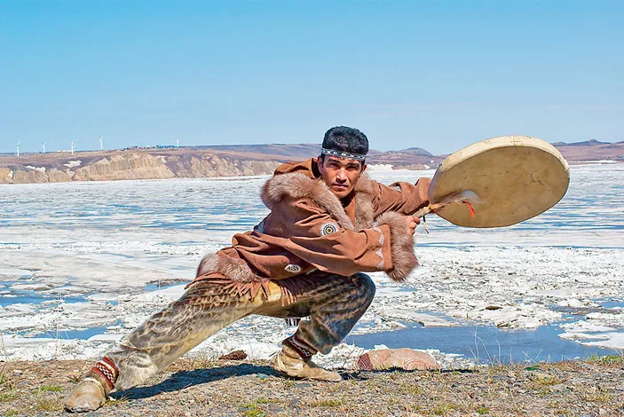
Религия
Традиционные верования — анимизм и шаманизм. Вселенная делится на верхний, средний и нижний миры. С XVIII века распространилось православие.
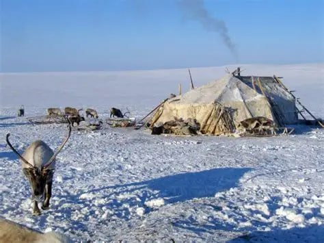
Расселение
Чукчи населяют Чукотский полуостров, побережье Берингова и Чукотского морей. Делятся на две группы: оленные (чавчыв) и прибрежные (ангкальыт).
🎭 Традиции и культура
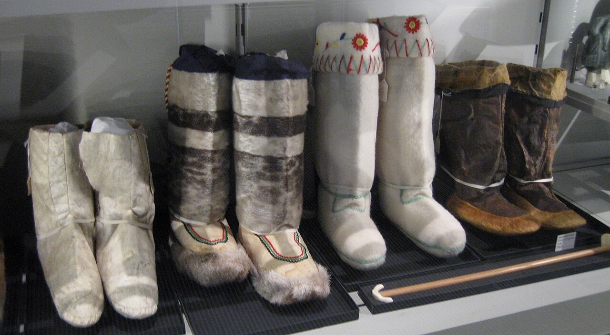
Национальный костюм
Костюм из шкур оленей, тюленей и белых медведей. Женщины носили «кэрэт» (длинное платье с капюшоном), мужчины — «кэрэт» или «топыкан» (комбинезон). Обувь из шкур — «кымгыт».
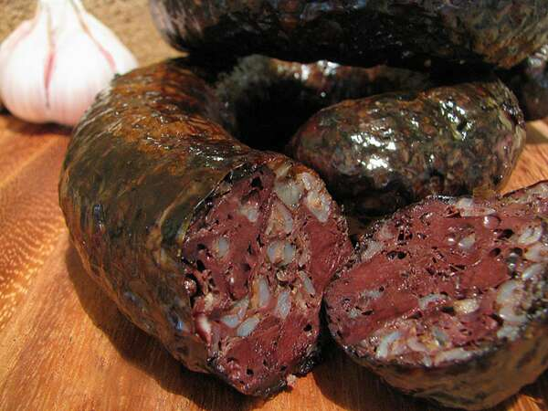
Кухня
Мясо оленя (сырое, варёное, сушёное), рыба, тюлений жир, ягоды, морошка. Напиток «моча» — кислый сок из ягод. Традиционное блюдо — «вылька» (кровяная колбаса).
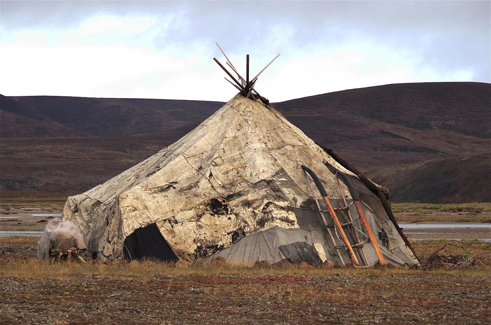
Жилище
«Яранга» — переносное жилище из деревянного каркаса, покрытое оленьими шкурами. Внутри — «палатка» из шкур, очаг. Зимой — «аранг» (землянка).
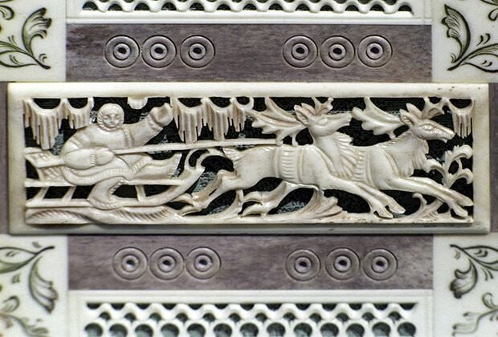
Ремёсла и искусство
Уникальная резьба по кости кита и моржа, плетение из травы, вышивка бисером. Традиционные игрушки из кожи и меха для детей. Народные сказки и легенды.
🎉 Народные праздники
-
Кэвэт (Праздник оленей)
Главный праздник чукчей. Состязания на оленьих упряжках, борьба, поднятие камней, народные игры. Благословение стада.
-
Нулинт (Праздник кита)
У прибрежных чукчей. Обряд благодарности духу кита за удачную охоту. Танцы, песни, угощения.
-
День народов Чукотки
Праздник в Анадыре. Фольклорные выступления, конкурсы национальных костюмов, ярмарки ремёсел.
-
Шаманские обряды
Традиционные ритуалы исцеления, предсказания погоды, благословения перед охотой. Использование бубна.
📸 Галерея
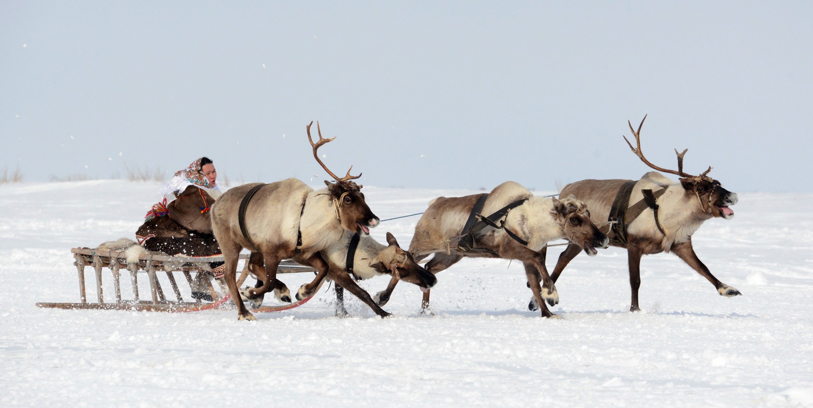
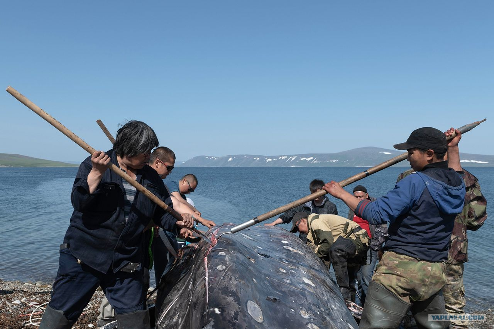
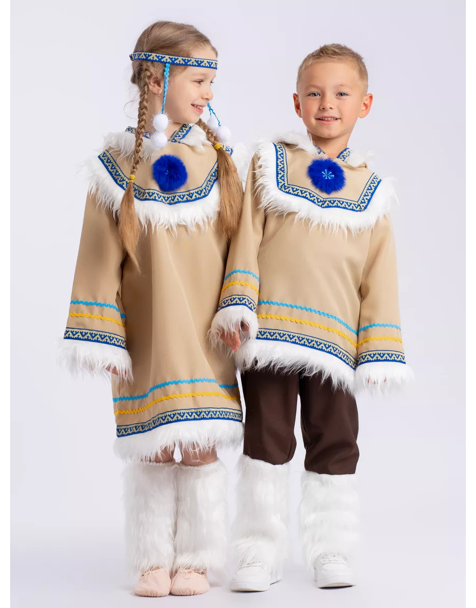
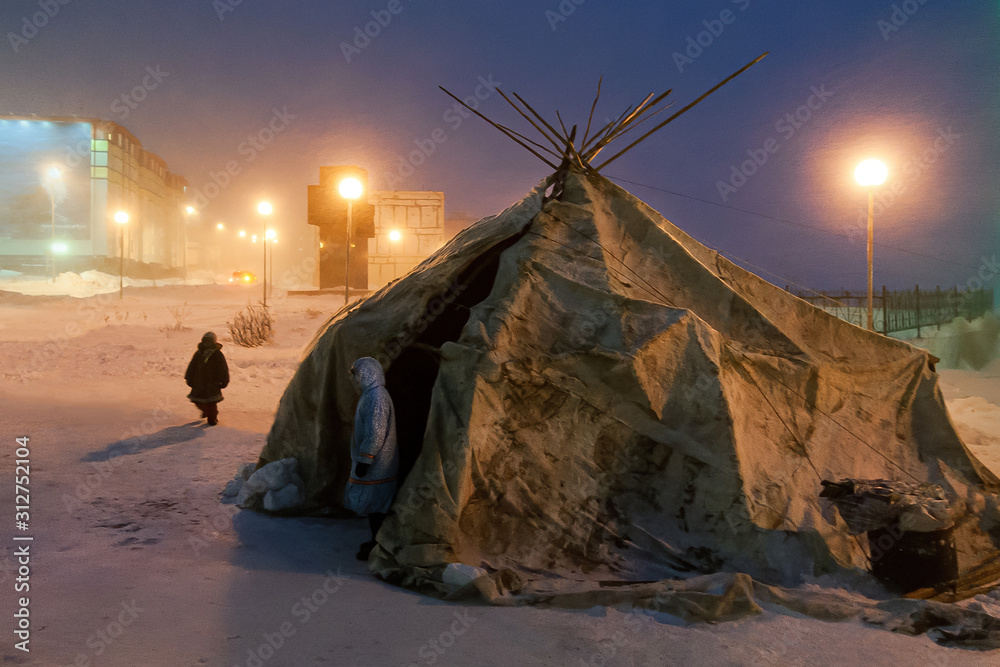
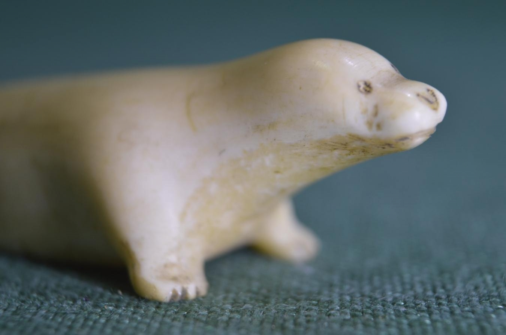
💡 Интересные факты
🐕 Оленеводство
Чукчи — одни из немногих народов мира, которые приручили северного оленя. Олень — всё: транспорт, пища, жилище, одежда.
🐋 Охота на китов
Прибрежные чукчи имеют право на традиционную охоту на серых китов — это исключение из международного запрета.
✍️ Письменность
Чукотский язык получил письменность только в 1931 году. До этого знания передавались устно.
🎯 Викторина: Насколько хорошо вы знаете культуру чукчей?
Ответьте на вопросы на основе информации с этой страницы.